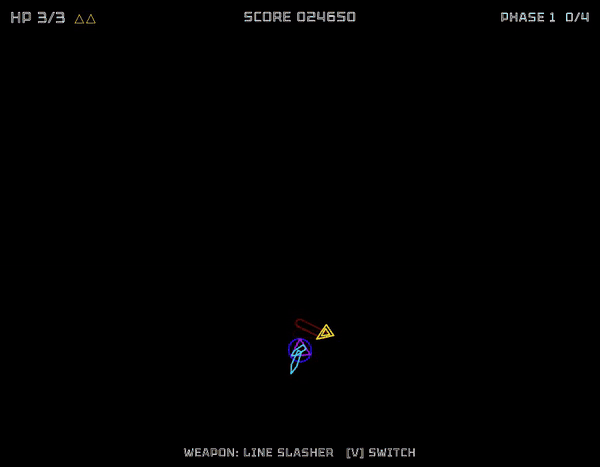

Weapon
Line Slasher
The Line Slasher: A melee slash, and a dash that cuts through anything in its way.
How it works
- Tap: A slash. Its reach is 1.5, in a 120° arc in front of you. It does 1 damage but counts as charged, so it kills dark blue. It can't cut purple or reach through solid walls.
- Hold and let go: A dash. Nothing can hurt you while dashing, and it hits what you pass through. You can slash in the middle of a dash.
Tip: Dash through a hazard to dodge it and hit what's behind it at once.

Colour rules
Cyan is destroyed by any shot, dark blue only by a charged shot, purple can't be destroyed, and pink can't be destroyed and hits for 2.